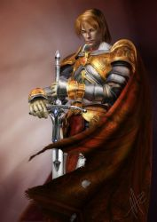
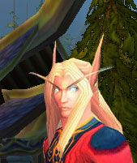

Guildes
Fils de Quel'Thalas (les)
Clemanas
Age : 136 ansSexe : Homme
Race : Elfe
Faction : Alliance
Formation : Paladin
Description : La fin d'un empire
Du plus loin qu'il se souvienne , Clemanas était adolescent.
Sa nourrice , affolée , le réveillait soudainement.
Dehors , des bruits affreux retentissaient , accompagnés de cri.
Sa seule relation maternelle l'emmena dans le bureau de son père.
Ce dernier qu'il ne voyait que très peu.
L'homme , sur la terrasse , combattait une créature immonde qui tomba dans le vide.
Son père , après s'être assis , lui remis une lettre scellée par la cire où l'on pouvait voir les armoiries de la famille Summerdrake , la sienne : Le dragon devant les rayons du soleil.

- Va mon fils , je t'aime , dit le noble en armure.
- Père ! s'écria l'adolescent
Son père s'abattit sous une volée de spores d'un nérubien.
Clemanas le vit dans un dernier fracas avant de voir les yeux sans vie d'un homme aux cheveux longs et blancs.
Le palefrenier de la famille mit Clemanas sur le cheval de son défunt père.
L'adolescent de 112 ans dit ses derniers adieux à sa nourrice et partit vers les contrées humaines... Le Quel'thalas n'était plus.
Quand le cheval et son cavalier entre la vie et la mort arrivèrent à Goldshire , personne ne se doutait de ce qu'il s'était passé.À Goldshire , le destrier paternel mourut.
Une adolescence douloureuse.
Une fois à Goldshire , un vieux pêcheur du nom de Joe le recueillit.
Cet homme l'emmena chez lui et commença à l'aimer comme son fils.
Il reçut l'éducation d'un humain de son âge apparent mais c'était sans compter la femme du vieux Joe qui lui sectionna les oreilles avec une paire de ciseaux mal aiguisés.
Humilié , le jeune homme s'engagea dans l'armée espèrant y trouver quelque chose pour étancher sa soif de magie. Il partit avec le seul regret de laisser le vieux Joe auquel il envoya de l'argent par la suite. Une fois à Lordaeron , il chercha la caserne.
Après 2 ans d'entrainement acharné on lui proposa d'être Paladin.
Il accepta et partit pendant 6 mois à errer sur les routes. Il trouva sa voie en oeuvrant pour la vengeance de son peuple.
Il avait oublié la vieille lettre qu'il avait reçu. Il la trouva en fouillant dans sa sacoche , après s'être blessé au coutelas de son père , avec lequel il jouait étant enfant. Après s'être rememoré l'horrible scène de la mort de son père , il ouvrit la lettre et y trouva un médaillon blasonné aux armes de sa famille.
Clemanas ne connaissait pas son père. Il considérait l'homme comme un maitre ou un père adoptif , ce qui l'étonnait vu la noblesse du personnage.
Sur la lettre , il y avait écrit ceci en elfique:
Mon Fils
Quand tu liras cette lettre ,
je serais mort.
Je t'écris pour te dire que tu es mon fils mais que je n'ai jamais pu te considérer comme tel car ta mère est morte en te mettant au monde et je te voyais un peu comme le meurtrier de mon amour.
Le Médaillon joint te donnera une place dans la société , que tu sois en Quel'thalas ou ailleurs.
Sache que notre famille est la plus près de la famille royale et en cas de fin de cette dernière tu serais l'héritier légitime du Trône. Kael , ton ami d'enfance , est enfaite ton cousin.
Sache que je t'aime comme j'ai aimé ta mère auparavent.
Adieu
Caerius Summerdrake.
Clemanas s'effondra en larmes au bord du chemin et mit à feu et à sang un village de troll des forêts.
Plus d'infos sur Clemanas >>>
Lire les 3 récits de Clemanas >>>
Kanzermav
 Age : 455
Age : 455
Sexe : Homme
Race : Elfe
Faction : Alliance
Formation : Chasseur
Description : C'est un ancien cuisinier Haut-elfe de la cour royale. Il est peureux, boudeur, n'aime pas les elfes de la nuit. Adore manger et dormir et ces actions n'ont rien d'héroique, c'est juste le fruit du hasard ou de la malchance. Il est maintenant majordome, prône la rigeur morâle. L'exil et sa malédiction le font souffrir. Il ne veut qu'une vile simple, mais l'exil le forçe parfois à sombrer aider des proches dans des combines.
Je vous recommande humblement mes histoires. Qui détaille la présensation hrp.
Les autres récits concernant d'autres personages que Kanzer Mav ont tous été joué par moi-même un jour que cela soit dans le cadre d'un scénario ou un court labs de temps.
Personnage actuellement joué :
- Kanzer Mav
-Daelyn
Plus d'infos sur Kanzermav >>>
Lire les 13 récits de Kanzermav >>>
Svetlana
Age : 57Sexe : Femme
Race : Humain
Faction : Alliance
Formation : Démoniste
Description : Sombre, renfermée et d'une froideur excessive. Voilà ce qui caractérise cette jeune femme au visage fin et aux yeux émeraude. Elle est relativement jeune, mais son corps, habillé d'une peau laiteuse, est déjà parfaitement adulte. Des cheveux couleur miel mi-longs, généralement attachés en queue de cheval, complètent le dessin de la demoiselle d'apparence humaine.
Son passé reste inconnu aux yeux de beaucoup, Svetlana n'en parle pas simplement pas. On ne sait rien de ses parents, mais beaucoup se posent des questions quant à la véracité de son nom de famille. Zaborac n'est pas dans les consonances humaines ou d'autres peuples de l'Alliance. Mais après tout, les Démonistes correspondent généralement beaucoup à cette caractéristique.
Dans l'aura de mystère qui entoure son passé, on peut en sortir les sources officielles. Elle aurait accompagné son maître, un mage de race Elfique avec l'expédition d'Arthas en direction de Northrend. Portée disparue, suite à une escarmouche avec le Fléau, elle réapparut miraculée sur la terre de Kalimdor en compagnie d'un Chasseur de Démon. Les rares de ses connaissances ayant survécu aux événements de l'Est notèrent les changements apportés à sa personnalité, et une espèce de vide régnant dans son regard autrefois plein de vie.
De cela, ils conclurent qu'elle avait subit des aventures peut enviables sur le continent Nord et la rumeur que le Chasseur devait être son amant se propagea très vite. Ce dernier disparut quelque temps après, et on ne le revit pas.
Svetlana, elle, montra très rapidement sa dévotion totale (les mauvaises langues diront "corruption") à la magie des arcanes et cette idéologie, que partagent nombreux Démonistes, de pouvoir maîtriser la puissance même des Légions Ardentes.
Sur ses rapports avec les autres races, elle est très proche avec la communauté des Elfes voués aux arcannes. Et malgré son penchant pour cette magie, elle semble très coopérative avec les Elfes de la Nuit. (Coopération n'étant pas toujours bilatérale). Ses rapports avec les autres membres de l'Alliance, furent-ils Démonistes se réduisent au strict nécessaire.
Pour ce qui est de la Horde, les peuples la composant sont à ses yeux des gens peu évolués, elle ne désire pas spécialement le combat à leur rencontre. Exception faite des Morts-Vivants qui ne sont pas sous son contrôle direct de Démoniste. Pour ceux la, ils n'ont qu'une chose à faire face à elle : Retirer l'adjonction de "Vivant" à leur dénomination.
Plus d'infos sur Svetlana >>>
Syldur
Age : 110Sexe : Homme
Race : Elfe
Faction : Alliance
Formation : Mage
Description : Description physique:
Syldur représente bien l'archétype physique de ceux de sa race: de haute taille, mince, peau clair, et longue chevelure blonde, d'où dépassent les deux longues oreilles pointues typique des Elfes de Quel'Thalas.
Actuellement, le physique elfique de Syldur est masqué sous une apparence magique d'humain.
Background:
Syldur, comme beaucoup de membres de sa race, a voué son existence aux arcanes en devenant mage. Il étudia d'abord la magie à Silvermoon, la capitale du Haut Royaume elfique de Quel'Thalas, durant son adolescence, puis, plus tard, partit étudier quelques années à Dalaran. Lors de la Seconde Guerre contre la Horde démoniaque, Syldur rejoignit les rangs de l'armée de l'Alliance avec d'autres mages elfes et humains. Il participa à la bataille finale contre le Portail Sombre, qui scella la défaite définitive de la Horde démoniaque.
A la veille de la Troisième Guerre, alors que le Conseil de Silvermoon décréta officiellement le retrait de Quel'Thalas de l'Alliance, Syldur, par amitié envers plusieurs magiciens humains qu'il rencontra lors de ses études à Dalaran et pendant la guerre contre les Orcs, décida de rester de son propre chef au sein des forces militaires de l'Alliance. Lors de l'invasion de Lordaeron par la Légion Ardente, Syldur fit partie de l'expédition menée par Jaina Proudmoore qui vogua jusqu'aux ancestrales terres de Kalimdor. Le mage elfe prit part à la bataille du Mont Hyjal aux côtés des Elfes de la Nuit et des Orcs.
Lors de cette bataille, Syldur fit la connaissance de quelques Orcs, et découvrit à travers eux combien la Horde avait changé, et comment elle s'était à présent rebellée contre ses anciens maîtres démons et comment elle avait retrouvé ses nobles racines chamanistiques.
Après la défaite de la Légion, Syldur partit fonder la citadelle de Theramore avec le reste de l'expédition de Jaina. Plus tard, quand Thrall attaqua Theramore et tua le père de Jaina, l'Amiral Delin Proudmoore, beaucoup d'habitants de l'île commencèrent à douter de l'alliance avec la Horde, et commencèrent à se montrer hostiles envers leurs voisins Orcs, Taurens et Trolls de la Jungle. Mais ce ne fut pas le cas de Syldur, qui considérait l'amiral comme un imbécile borné qui n'avait pas voulu croire combien les Orcs avaient changés depuis la Seconde Guerre.
Syldur est toujours fidèle à Jaina Proudmoore, et espère un jour pouvoir voir se réconcilier Alliance et Horde. Espérant pouvoir refonder Quel'thalas ou un nouveau royaume pour son peuple, et surtout trouver un moyen de délivrer son peuple de sa Soif de magie, dont elle souffre depuis la disparition du Puits de Soleil de Quel'Thalas, Syldur s'est mis à arpenter les terres de Kalimdor et des Royaumes de l'Est, tentant de ralier à sa cause le plus de hauts elfes et elfes de sang possibles...
C'est ainsi que naquit la Confrérie des Fils de Quel'Thalas...
Plus d'infos sur Syldur >>>
Lire les 5 récits de Syldur >>>